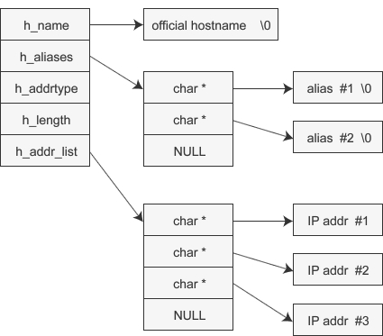

通过域名获取IP地址
struct hostent *gethostbyname(const char *hostname);
struct hostent {
char *h_name; //official name 官方域名，官方域名代表某一主页，但实际上一些著名公司的域名并未用官方域名注册
char **h_aliases; //alias list 别名，可以通过多个域名访问同一主机。同一 IP 地址可以绑定多个域名，因此除了当前域名还可以指定其他域名
int h_addrtype; //host address type 地址类型 gethostbyname() 不仅支持 IPv4，还支持 IPv6，可以通过此成员获取IP地址的地址族（地址类型）信息，IPv4 对应 AF_INET，IPv6 对应 AF_INET6
int h_length; //address lenght 地址长度 IP地址长度。IPv4：4字节，32bit，IPv6:16字节, 128bit，是IPv4的近1600亿倍
char **h_addr_list; //address list 地址列表，以整数形式保存域名对应的 IP 地址。对于用户较多的服务器，可能会分配多个 IP 地址给同一域名，利用多个服务器进行均衡负载
}

这里展示了Windows下的示例，下面我们写一个Linux下的示例：
#include <iostream>
#include <netdb.h>
#include <arpa/inet.h>
int main(int argc, const char * argv[]) {
struct hostent *host = gethostbyname("www.baidu.com");
if (!host) {
puts("Get IP address error!");
exit(0);
}
struct hostent *gethostbyname(const char *hostname);
/**
struct hostent {
char *h_name; // 官方域名
char **h_aliases; // 别名
int h_addrtype; // 地址类型
int h_length; // IP地址长度
char **h_addr_list; // 地址列表
}
*/
// 别名
for (int i = 0; host->h_aliases[i]; i++) {
printf("别名 %d: %s\n", i+1, host->h_aliases[i]); // 别名 1: www.baidu.com
}
// 地址类型
printf("地址类型：%s\n", (host->h_addrtype==AF_INET) ? "AF_INET" : "AF_INET6"); // 地址类型：AF_INET
// IP地址
for (int i = 0; host->h_addr_list[i]; i++) {
printf("IP地址：%d: %s\n", i+1, inet_ntoa(*(struct in_addr*)host->h_addr_list[i] ));
// IP地址：1: 115.239.211.112
// IP地址：2: 115.239.210.27
}
return 0;
}